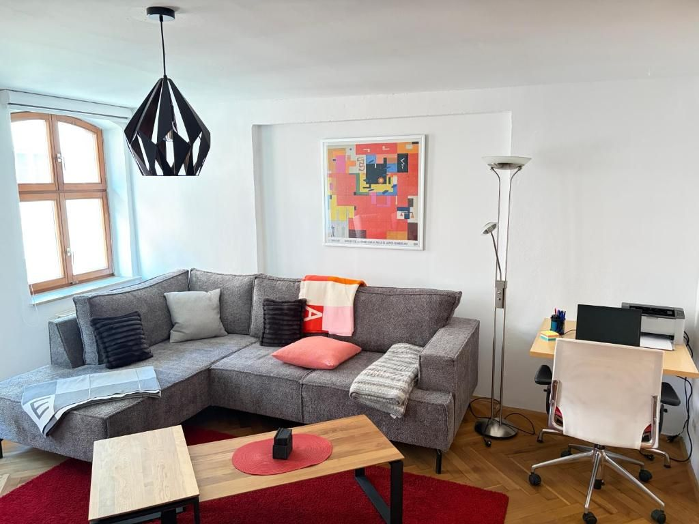
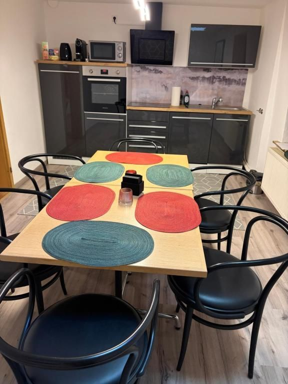
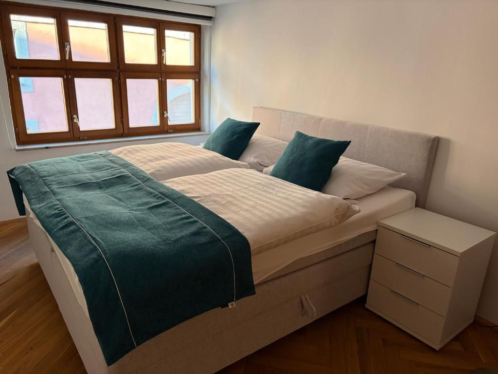

Gelobt werden vor allem die zentrale Altstadtlage, die großzügige Aufteilung und der unkomplizierte Check-in.
Quelle: Booking.com · Bewertungsstand 2026FERIENWOHNUNG IN DINKELSBÜHL ALTSTADT
DesignApartment.
Großzügig wohnen. Gemeinsam ankommen.
85 m² WohnflächeBis zu 6 Gäste3 Schlafzimmer1 Badezimmer

Bild vergrößern ↗

Mehr Raum für gemeinsame Tage
Historisches Haus.
Moderner Rückzugsort.
Das DesignApartment verbindet individuellen Charakter mit großzügigem Platz für Familien und kleine Gruppen.
Drei Schlafzimmer, eine eigene Küche und ein heller Wohnbereich machen die Wohnung zum komfortablen Ausgangspunkt für Ihre Zeit in Dinkelsbühl.
Das erwartet Sie
- Voll ausgestattete Küche
- Kostenloses WLAN
- 3 Schlafzimmer
- Ein eigenes Badezimmer
- Zentrale Altstadtlage
- Bis zu 6 Gäste
Ankommen & Abreisen
Anreise zwischen 15:00 und 18:00 Uhr · Abreise bis 10:00 Uhr, sofern nichts anderes vereinbart wurde.
Von Gästen bestätigt
8,5 von 10.
Lage 9,7.
Aktueller Bewertungsstand auf Booking.com · 44 Bewertungen.
Nördlinger Straße 16 · mitten in Dinkelsbühl und ideal für Wege zu Fuß.
Quelle: Booking.com · LagebewertungEin erster Blick nach drinnen
So wohnen Sie hier.
Originalaufnahmen · DesignApartment
{kind=link}
{kind=link}
{kind=link}
{kind=link}
{kind=link}
{kind=link}
Mitten in Dinkelsbühl
Altstadt vor der Tür.
Kurze Wege inklusive.
Die Apartments liegen in der Nördlinger Straße 16 in der historischen Altstadt. Restaurants, Cafés und viele Sehenswürdigkeiten lassen sich bequem zu Fuß erreichen.
Historische Altstadt direkt vor der TürParken laut Gastgeber in etwa 5 GehminutenPersönlicher Kontakt vor und während des Aufenthalts
Aufenthalt planen Noch eine Möglichkeit